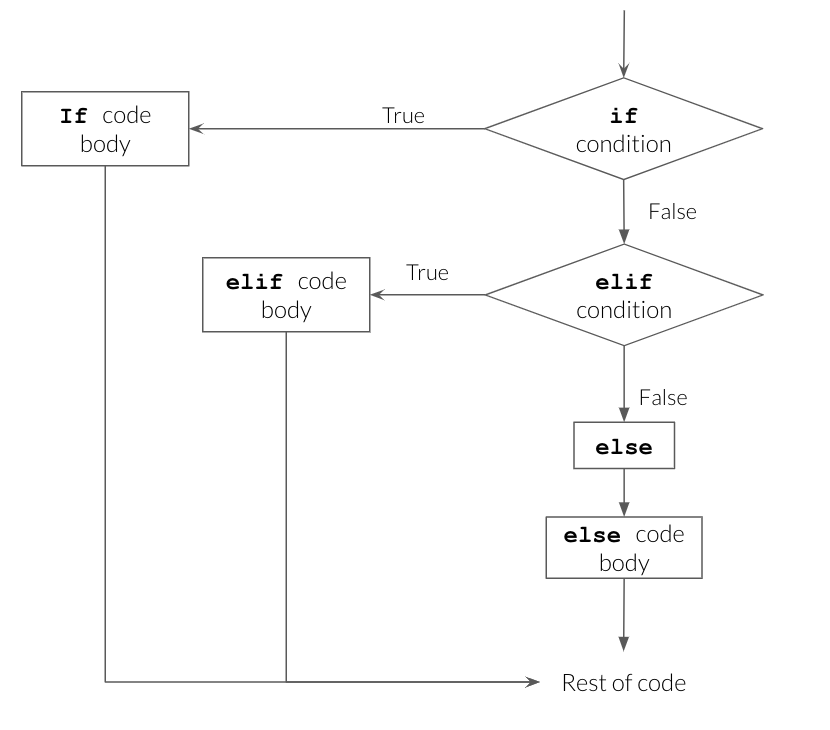
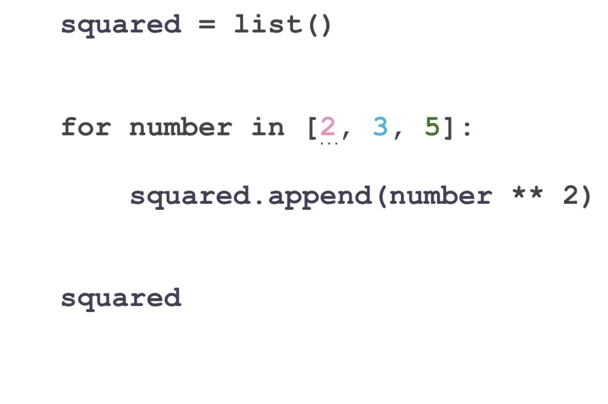

4416.6Lecture 4: Control Flow
BAA1118 - Foundations of Programming for Analytics & AI
Damien Dupré
For Today
Requirements
- ✅ Lists, dictionaries, indexing and slicing
- ✅ Comparisons returning
TrueorFalse
Programme
- Conditions:
if,elif,else forloopswhileloopsbreak,continueand comprehensions
Any questions?
Straight Line Code
Everything so far has run top to bottom, once.
Real analysis needs two more things:
- Doing something only sometimes: conditions
- Doing something many times: loops
Together they are called control flow: you control the order in which lines run.
1. Conditions
if
- The line starts with
ifand ends with a colon - The block underneath is indented
- The block runs only when the condition is
True
Indentation Is Syntax
In most languages, indentation is decoration. In Python, it is the code.
Cell In[45], line 2 print("Premium") ^ IndentationError: expected an indented block after 'if' statement on line 1
The convention is 4 spaces. Colab and VS Code insert them for you when you press Enter after a colon.
Warning
Never mix tabs and spaces. It produces errors that are invisible on screen.
if / else
Standard customerelse has no condition. It catches everything the if did not.
if / elif / else
Silver- Conditions are tested in order, top to bottom
- The first true one runs, the rest are skipped
- Order therefore matters enormously
if / elif / else

Source: UBC Master of Data Science, Programming in Python for Data Science
Order Matters
SilverThe customer spent €1,250 and was labelled Silver, because > 100 was tested first and won.
Write cut-offs from the most restrictive to the least.
Combining Conditions
Truthiness
You can put any value after if, not only a comparison. Python decides whether it counts as True or False:
- Falsy values count as
False: zero, empty or nothing (0,"",[],{},None) - Truthy values count as
True: everything else, such as42or"Dublin"
No email on file"" and None are both falsy, so if email: catches both.
Nested Conditions
Irish premiumEach level adds 4 spaces. Beyond two levels, the code is hard to read: combine with and instead.
Your Turn: Grading
Write code that turns a mark out of 100 into a grade:
| Mark | Grade |
|---|---|
| 70 and above | First |
| 40 to 69 | Pass |
| below 40 | Fail |
- Store a mark in a variable, produce the grade with
if/elif/else - Print it with an f-string:
A mark of 64 is a Pass - Test it with 70, 40 and 39
Solution
| Mark | Grade | Branch |
|---|---|---|
| 70 and above | First | if |
| 40 to 69 | Pass | elif |
| below 40 | Fail | else |
- Each row of the table becomes one branch, in the same order
- The
elifneeds nomark < 70: theifhas already caught 70 and above >=matters: with>, a mark of exactly 70 would be a Pass
2. for Loops
Repeating Over a Collection
Two ways to total a list without sum():
By hand: one line per element
Read the loop as English: “for each value in sales, add it to total”. The print() inside the loop shows each step.
Anatomy of a for Loop
itemis a new variable you name, holding one element at a timecollectionis a list, string, dictionary, or anything iterable- The colon and the indented block, exactly as with
if - The block runs once per element
Watching It Run

Source: UBC Master of Data Science, Programming in Python for Data Science
Watching It Run
Now processing: Ireland
Now processing: France
Now processing: SpainThe loop variable survives after the loop, holding the last value:
range()
For a fixed number of repetitions, range() generates the numbers.
range(5) gives 0, 1, 2, 3, 4: five numbers, starting at zero, stopping before 5. The same rule as slicing.
The Accumulator Pattern
Three steps you will write for the rest of your life:
Building a New List
[12.3, 30.75, 10.46]Start with an empty list, append() inside the loop. This is the second most common loop pattern.
Why Not Start at 0?
A total starts at 0, so why does this list start at []? Try it with 0:
--------------------------------------------------------------------------- AttributeError Traceback (most recent call last) Cell In[61], line 2 1 prices_with_vat = 0 ----> 2 prices_with_vat.append(12.3) AttributeError: 'int' object has no attribute 'append'
append()only exists for lists0is anint, and aninthas noappend(): that is what the error says- Start with the empty version of what you are building:
0for a total,[]for a list
Filtering Inside a Loop
Conditions and loops combine naturally:
Looping Over a Dictionary
name
city
spendname: Damien
city: Dublin
spend: 1250.5.items() gives both at once, and the two loop variables are unpacked exactly as with tuples.
Looping Over Nested Data
258Eight lines. In week 8, pandas does this in one: df.groupby("region")["units"].sum().
enumerate() and zip()
When you need the position as well as the value:
0 Ireland
1 France
2 SpainWhen you need to walk two lists together:
Your Turn: Loop Practice
Each task reuses one pattern from the previous slides:
- The total and the mean of
monthly, withoutsum() - A new list
target: each value plus 10, usingappend() - Print only the values above 150
- Use
zip()to print each month with its value:Jan: 130
Solution
Total: 600
Mean: 150.03. while Loops
Repeating Until
A for loop runs a known number of times. A while loop runs until a condition stops being true.
15 2078.93We did not know in advance that it would take 15 years. That is exactly when while is the right tool.
The Infinite Loop
Important
Every while loop must contain a line that eventually makes the condition false. If Colab hangs, press the stop button, or Runtime -> Interrupt execution.
In practice, 95% of the loops you write in analytics are for loops.
break and continue
Found a big spender: 120090
760
180continue is how you skip missing values without crashing.
Your Turn: Until and Skip
Until: while
- €5,000 grows by 3% a year. Adapt the €1,000 example: how many years until it passes €10,000?
- Rerun at 6%. Does the answer halve?
Solution
24 years at 3%24 years at 3%, 12 at 6%: the “rule of 72” (72 ÷ the rate) predicts both.
continue skips each None and carries on. break stops the loop at the first None, so only 12.5 is printed.
4. Comprehensions
The Loop, Compressed
Building a list with a loop:
[12.3, 30.75, 10.455]The same thing, in one line:
Reading a Comprehension
Read it backwards: “for each price in prices, store price times 1.23”.
Comprehension With a Condition
And a condition on the value stored:
['small', 'big', 'small', 'big', 'small']Tip
If a comprehension no longer fits comfortably on one line, write it as a normal loop. Clever is not a goal.
Why Bother?
- Shorter, and once you are used to it, clearer
- It is everywhere in real Python code, so you must be able to read it
- It hints at the next idea: vectorisation
Loops Are Not the Destination
0 12.300
1 30.750
2 10.455
dtype: float64No loop. The operation applies to the whole column at once, and it is roughly 100 times faster on real data.
- You still need loops: for files, for models, for anything not column-shaped
- But from week 7, if you are writing a loop over rows of a table, there is usually a better way
Your Turn: Comprehensions
- Build
temps_fconverting each to Fahrenheit:f = c * 9/5 + 32 - Build a list of temperatures above 15 only
- Build a list of labels:
"warm"if above 15,"cold"otherwise - Rewrite question 1 as a normal
forloop, and check the two give the same result
Solution
[54.5, 59.0, 49.64, 70.34, 65.66, 39.56]
[21.3, 18.7]
['cold', 'cold', 'cold', 'warm', 'warm', 'cold']
TrueWhat We Have Seen
if/elif/else, tested in order, first match wins- Indentation is part of the language
for item in collection:and the accumulator patternrange(),enumerate(),zip()whilefor “until”, with the infinite loop riskbreakandcontinue- List comprehensions as a compact loop
References
- Charles Severance, Python for Everybody, chapters 3 and 5
- Real Python: Conditional Statements
- Real Python: List Comprehensions
- UBC Master of Data Science, Programming in Python for Data Science, for the diagrams and animations

Thanks for your attention and don’t hesitate to ask if you have any questions! @damien_dupre @damien-dupre https://damien-dupre.github.io damien.dupre@dcu.ie